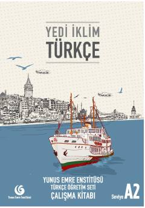

YİA2 seviyesi Türkçe öğrenenler için hazırlanan pratik çalışma kitabı.
Yunus Emre Enstitüsü tarafından hazırlanan bu çalışma kitabı, Türkçe öğrenenlerin A2 seviyesinde dil becerilerini geliştirmesi için tasarlanmıştır. Günlük yaşamda iletişim kurma, okuma, yazma, dinleme ve konuşma yetkinliklerini artırmaya yönelik alıştırmalar ve gramer konuları içermektedir.